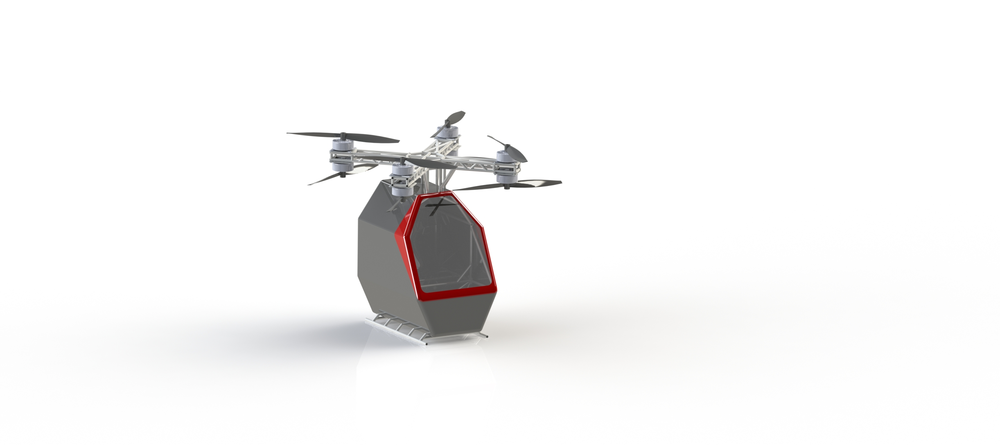
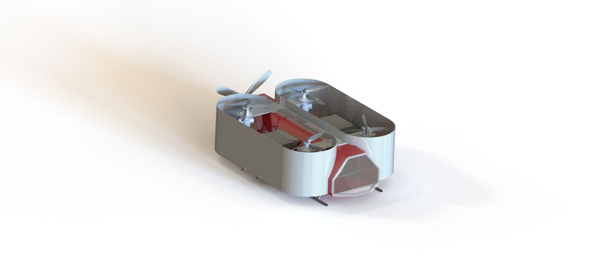
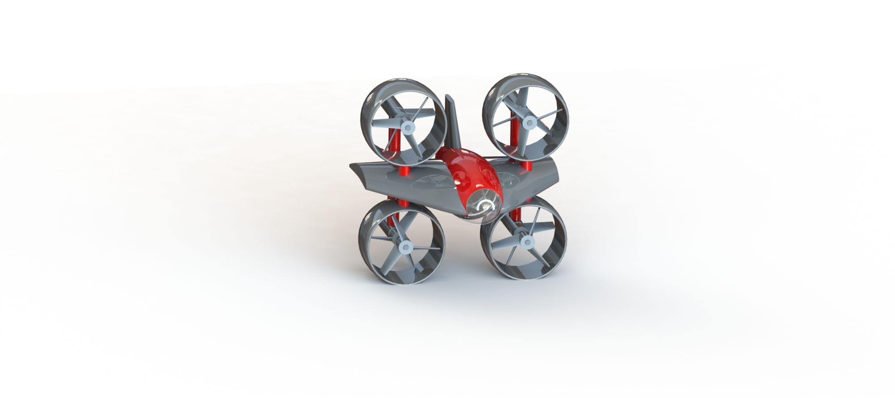

FlyUC is formed and enters the GoFly Competition
FlyUC creates three different designs and iterations to meet the standards set by the competition. Unfortunately, all the designs were deemed insufficient for various reasons.
The FlyUC team voted to leave the GoFly Competition to pursue their own project and set their own timeline.
FlyUC went back to the drawing board and decided to work on a small scale prototype of their electric vertical take-off and landing (eVTOL) aircraft. Called Prototype 1, later dubbed P1, the purpose of this prototype was to test the technology and gain better insight on the design before moving onto a larger design.
FlyUC presents Prototype 1 to the University of Cincinnati's Drone Lab for their approval of the design. Several suggestions and concerns were proposed by the Drone Lab.
FlyUC goes back and addressed the flaws and concerns proposed by the Drone Lab. The team plans to start building prototype 1, P1, the Fall of 2021.